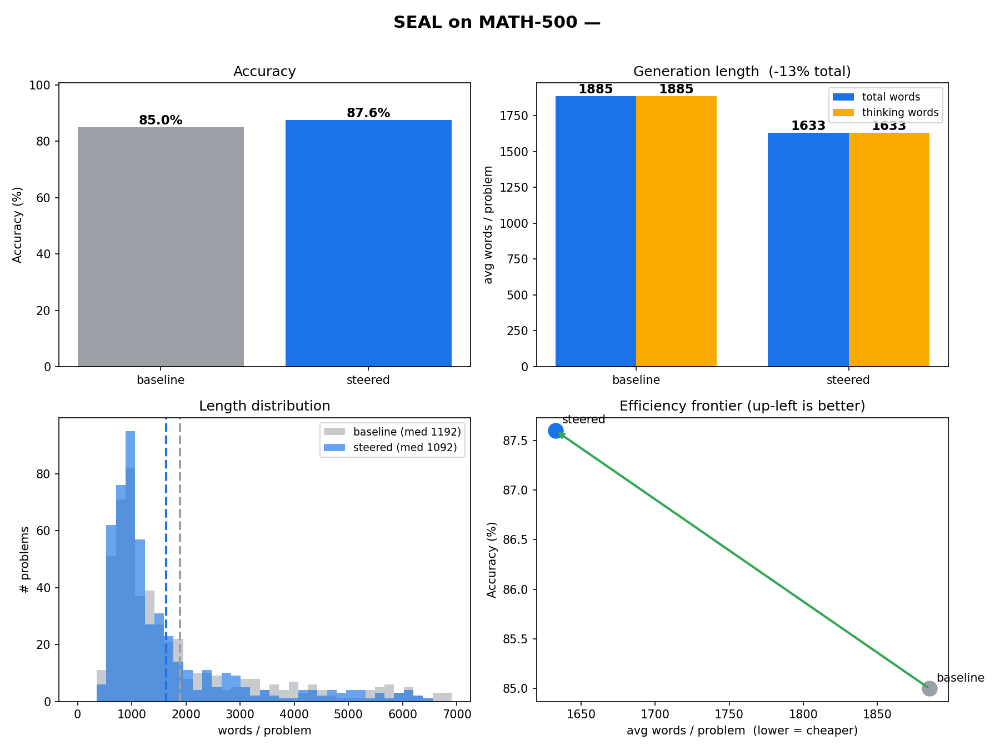
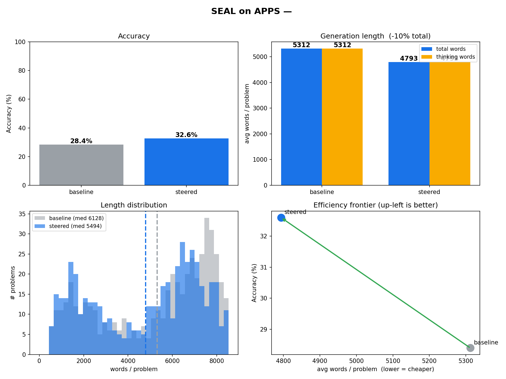
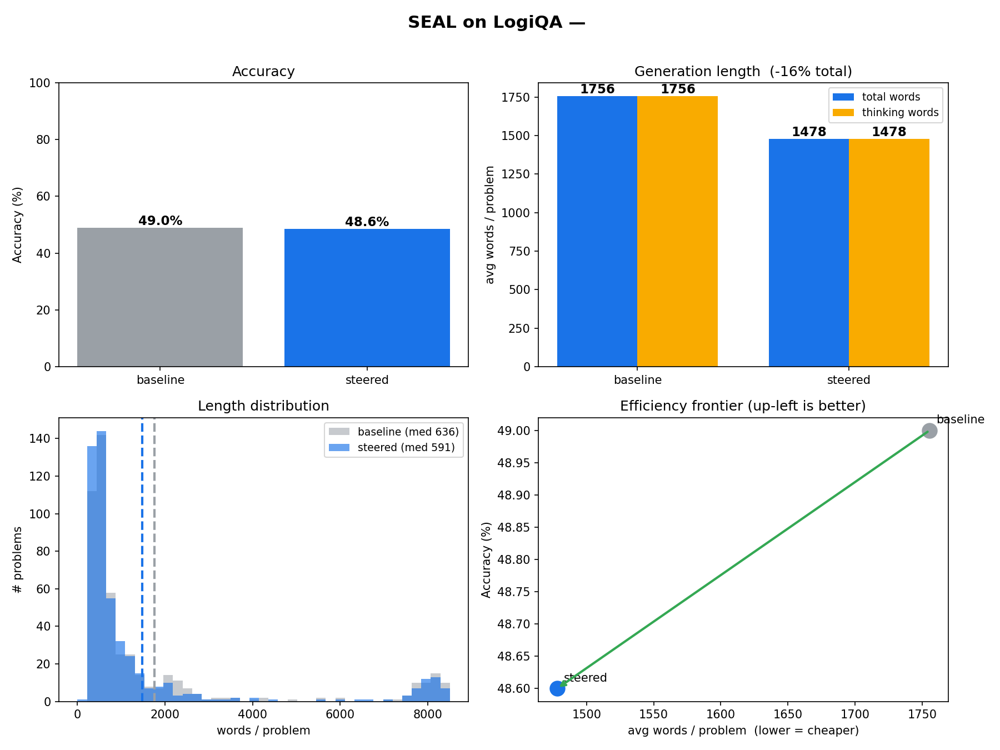

Scaling the logic vector to DeepSeek-R1-Distill-Qwen-7B
A steering vector extracted from LogiQA 2.0 English train traces (layer 20,
coefficient α = −1.0, 500 correct + 500 incorrect) on
DeepSeek-R1-Distill-Qwen-7B — the same recipe as the
7B MATH and APPS vector report,
rebuilt from scratch at 7B, then evaluated in-domain (LogiQA clean-500) and
cross-domain (MATH-500, APPS). Companion to the 1.5B
progress report S_logic tables.
Full results
| Domain | Eval set | Samples base / steer |
Acc base |
Acc steered |
Δ acc | Words base |
Words steered |
Δ len |
|---|---|---|---|---|---|---|---|---|
| Math (MATH-500) cross-domain | held-out test, random 500 | 500 / 500 | 85.0% | 87.6% | +2.6 | 1,885 | 1,633 | −13% |
| Code (APPS) cross-domain | test, random 500 | 500 / 500 | 28.4% | 32.6% | +4.2 | 5,312 | 4,793 | −10% |
| Logic (LogiQA) in-domain | clean English-500 | 500 / 500 | 49.0% | 48.6% | −0.4 | 1,756 | 1,478 | −16% |
\n\n reasoning-step boundary inside <think>.
Steering vector = mean(check ∪ switch) − mean(other), applied
by adding coef × vector at layer 20 with coef = −1.0.
Same 7B protocol as the MATH/APPS vector evals: chat, --remove_bos,
greedy, max_tokens=10000, n=500 seed 42.
- Model:
deepseek-ai/DeepSeek-R1-Distill-Qwen-7B(hidden_size 3584). - Packed vector
logiqa2_v_logic.pt: shape[3584], fp32, ‖S‖ ≈ 93.86, SHA256cfb5556a…e83e. - LogiQA uses
data/LogiQA/eval_rand42_500_clean.jsonplus--logiqa_english_only. Do not pair withresults_for_7b_math_vectors/LogiQA/(legacyeval_rand42_500.json, 16 train overlaps). - MATH-500 baseline here is 85.0% from this cell's unsteered
job. Akhilesh's 7B MATH baseline on main is 84.4% — close, different run.
scripts/report_stats.pykeeps them as separate benchmarks (math500_7bvsmath500_7b_s_logic). - APPS is pass@1 on the test split, random 500, seed 42. Length columns are
whitespace word counts from
visualize_results.py(7B tokenizer was unavailable in the plotting environment). Accuracy is frommetrics.json.
Dashboards
Accuracy, length, and distribution from visualize_results.py.
PNGs also live under results/results_for_7b_logic_vectors/<bench>/figures/.

S_logic on MATH-500 (cross-domain): 85.0% → 87.6%

S_logic on APPS (cross-domain): 28.4% → 32.6% pass@1

S_logic on LogiQA clean-500 (in-domain): 49.0% → 48.6%